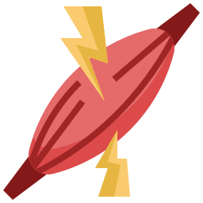
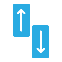
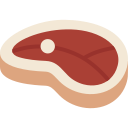
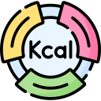
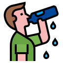
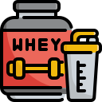

Nutrição e Treino: A Dupla Poderosa para o Desenvolvimento Muscular
Se você está em busca de ganhar músculos, está no lugar certo. No Nutricionar, entendemos que o desenvolvimento muscular não depende apenas de horas intermináveis na academia, mas também de uma alimentação adequada. Neste artigo, vamos explorar a importância da dieta e do treino na sua jornada para alcançar o shape dos seus sonhos.
A Importância do Treino
Treinar regularmente é o primeiro passo para ganhar massa muscular. O exercício resistido, como o levantamento de pesos, a musculação e os exercícios funcionais, são fundamentais para estimular o crescimento dos músculos. Aqui estão alguns pontos-chave sobre o treino:

Estímulo Muscular: Quando você realiza exercícios de resistência, está estimulando as fibras musculares a se romperem de maneira controlada. Isso desencadeia o processo de recuperação e crescimento muscular.

Variedade de Exercícios: É importante variar seus exercícios para trabalhar diferentes grupos musculares e evitar o platô, no qual seu corpo se acostuma com o treino. Um programa de treino bem planejado deve incluir exercícios para todos os grupos musculares.
Progressão e Intensidade: Aumente gradualmente a carga e a intensidade dos exercícios. Isso desafia seus músculos a se adaptarem e crescerem.
A Importância da Dieta
A dieta desempenha um papel igualmente importante no desenvolvimento muscular. Sem os nutrientes certos, seu corpo não terá o material necessário para construir e reparar músculos. Aqui estão algumas diretrizes nutricionais essenciais:

Proteína: A proteína é o bloco de construção dos músculos. Certifique-se de consumir uma quantidade adequada de proteína magra, como peito de frango, peixe, ovos e legumes.

Calorias Adequadas: Para ganhar massa muscular, você deve estar em um superávit calórico. Isso significa que você deve consumir mais calorias do que queima. Mantenha um equilíbrio saudável entre proteínas, carboidratos e gorduras.

Hidratação: A água desempenha um papel vital na recuperação muscular. Certifique-se de beber água suficiente para evitar a desidratação, que pode prejudicar o crescimento muscular.

Suplementação: Em alguns casos, suplementos como whey protein e creatina podem ser úteis para complementar a dieta. Consulte um profissional de saúde antes de iniciar qualquer suplementação.
Conclusão
Em resumo, o desenvolvimento muscular é um equilíbrio delicado entre o treino e a dieta. Não basta apenas levantar pesos; você também precisa fornecer ao seu corpo os nutrientes necessários para construir músculos de forma eficaz. O Nutricionar está aqui para ajudá-lo a entender esses princípios e a criar um plano personalizado que o levará ao shape desejado. Lembre-se, a mudança do seu shape começa com a combinação certa de nutrição e treino.